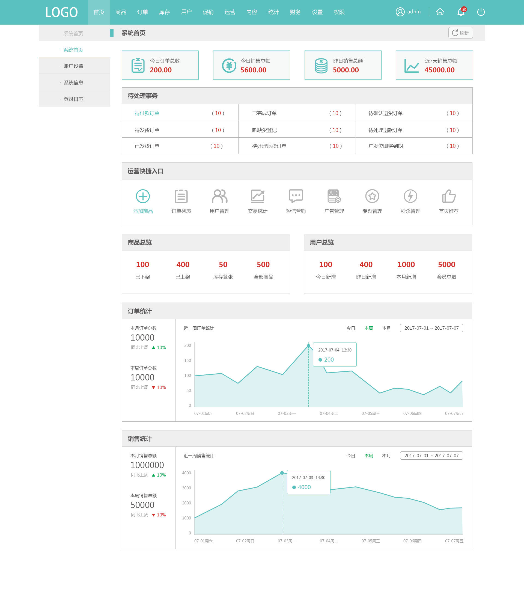
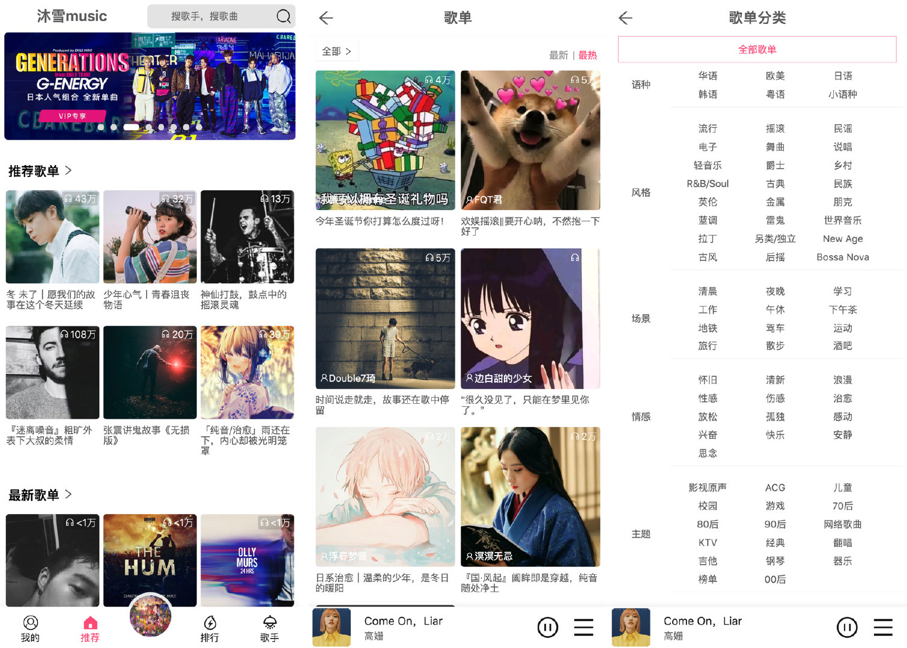
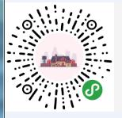

-
- Basic info. 基本信息
- 个人信息: 晏新建 / 男
- 出生年月: 1993.07.06
- 毕业院校: 云南农业大学 /硕士
- 工作年限: 一年
- 个人特长: 良好的英语水平，大学英语六级，无障碍阅读英文技术文档
-
- Skill. 技能清单
-
HTML / CSS
能够编写语义化的 HTML，模块化的 CSS，完成较复杂的布局
熟练使用HTML5和CSS3，实现应用一站式跨屏（PC端与移动端）开发
熟悉 Less stylus 等CSS预处理和模块化工具
-
JavaScript
熟悉原生 Javascript，能脱离 jQuery 等类库编码
能运用模块化、面向对象的方式编程
-
其他
熟悉vueJS等主流MVVM框架；
掌握localStorage、sessionStorage等前端存储方案，记录用户操作习惯或常用数据，从而降低HTTP请求，提升用户体验；
掌握JSONP和CORS等跨域解决方案；
熟悉 Webpack Gulp 等前端自动化工具
了解前端安全、性能优化方面的一些知识
了解node.js，利用其搭建简单的服务器。
-
- Experience. 项目与工作经验
上海理想信息产业有限公司（2018.7 - 2019.1）
-
海南政府app项目
负责 海南农民云 的前端主要开发工作，项目采用 WebApp 的形式，操作系统深度整合，实现一键安装、更新和卸载软件
使用 VueJS 框架 和 Sass 预处理器 来实现前端组件及数据交互，使用 mui 打包生成apk

-
电商后台管理系统
某电商后台管理系统的构建，为电商提供营销、数据服务和信息技术服务
商业项目使用Vue-Cli工程化构建，兼容 IE8

个人项目
-
移动端网易云音乐播放器 
炒鸡好看的 HTML5 音乐播放器，支持歌词、播放列表、播放模式（循环播放、随机播放等），兼容现代浏览器和移动端，API 丰富、可扩展性强
Vue：用于构建用户界面的 MVVM 框架
vue-router：为单页面应用提供的路由系统，使用了 Lazy Loading Routes 技术来实现异步加载优化性能
vuex：Vue 集中状态管理，在多个组件共享某些状态时非常便捷
vue-lazyload：实现图片懒加载，节省用户流量，优化页面加载速度
better-scroll：解决移动端各种滚动场景需求的插件，使移动端滑动体验更加流畅
-
小程序+vue+express构建书城小程序
使用vue语法配合小程序原生api 及原生组件完成前端开发 使用Koa2中件间组合mysql 完成后端开发
webpack打包 购买域名进行上线


晏新建的简历
(゜-゜)つロ 干杯~
-
- Contact. 联系方式
- 电话: 16621196907
- 邮箱: 2557880093@qq.com
- 微信: 402713336
- QQ: 2557880093
-
- Application. 应聘岗位
- 前端工程师
我是一个对前端和动漫由衷热爱、有趣的前端工程师。
我目前正在寻找前端工程师岗位的工作机会，快招我到碗里来吧！